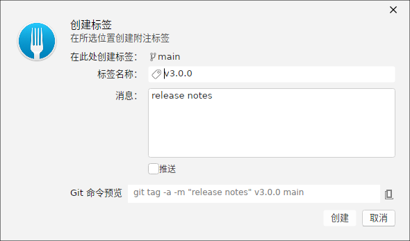
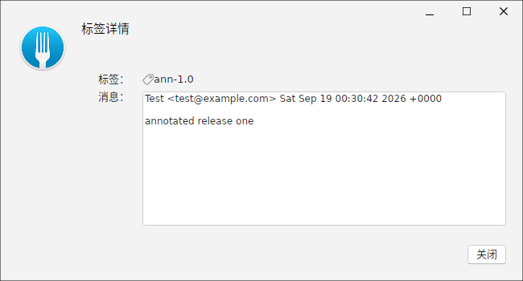
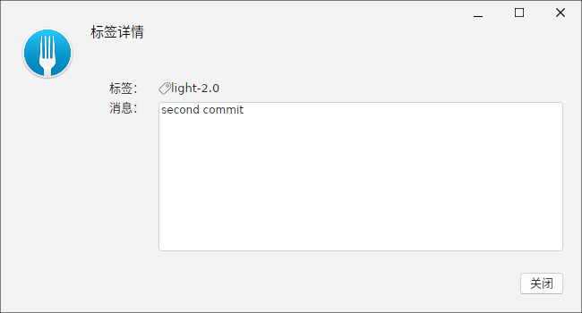
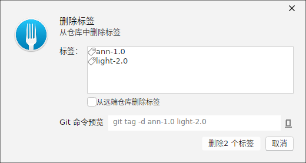
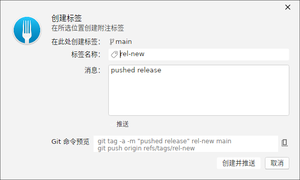
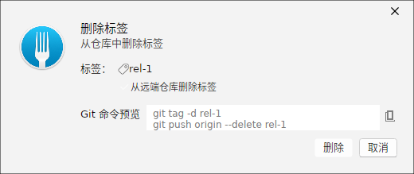
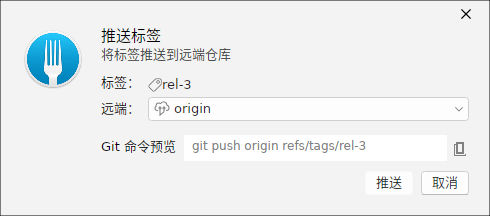
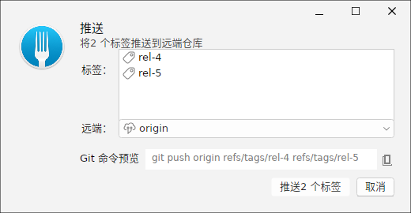

创建标签
在「创建标签」对话框中输入标签名，并可附加说明消息。选择目标提交后，对话框底部会实时预览要执行的 git tag 命令（附注标签默认使用 -a 与 -m）。

标签详情：附注标签
选择某个标签后可查看其详情窗口。附注标签（annotated）带有创建者、创建时间、消息与指向的对象类型，并展示其所指的提交信息，便于追溯发布版本。

标签详情：轻量标签
轻量标签（lightweight）只是某个提交的直接引用，不携带独立的标签对象。在详情窗口中会如实展示它直接指向提交、而没有标签自身的作者/消息字段。

删除多个标签
「删除标签」对话框以列表形式展示标签。可以勾选一个或多个标签批量删除，并选择是否同时从远程删除（对应 git push origin :refs/tags/<name>）。

创建并推送标签
创建标签时勾选「创建后推送到远程」，会在本地创建标签后立即 git push 到选中远程；命令预览随之切换为包含推送的完整命令链。

删除标签并同步远程
当你需要删除某个标签时，可勾选「同时从远程删除」。此时对话框会在本地删除之外，追加远程删除命令，保证远端标签一并清理。

推送单个标签
对单个标签，可单独发起推送使其在远程出现。选定目标远程后，窗口会预览 git push origin <tag> 对应的推送命令。

推送多个标签
多条标签需要同步到远程时，可一次勾选多个标签批量推送，避免逐条操作。命令预览会汇总为一次远程推送。
